library(tidyverse)Appendix D — R Functions and Packages Reference
This appendix provides a quick reference for all the R functions and packages used throughout this book. Use this as a handy guide when you need to remember the syntax or arguments for a particular function.
D.1 Packages Used in This Book
D.1.1 tidyverse
The tidyverse is a collection of R packages designed for data science. When you load tidyverse, it automatically loads several packages including ggplot2, dplyr, tidyr, readr, and others.
What it’s used for:
- Data manipulation and transformation (
dplyr) - Data visualization (
ggplot2) - Reshaping data (
tidyr) - Reading data files (
readr)
Loading:
D.1.2 modelsummary
The modelsummary package creates publication-quality tables for regression results and descriptive statistics.
What it’s used for:
- Creating formatted regression tables comparing multiple models
- Generating descriptive statistics tables
- Exporting tables to Word, LaTeX, or HTML
Loading:
library(modelsummary)D.1.3 palmerpenguins
A dataset package containing measurements of penguins from Palmer Station, Antarctica. Great for learning data visualization and exploration.
What it’s used for:
- Practice dataset for learning R
- Data visualization examples
- Regression examples
Loading:
library(palmerpenguins)
data(penguins)D.1.4 wooldridge
Contains all datasets from Wooldridge’s Introductory Econometrics textbook.
What it’s used for:
- Real-world econometric datasets
- Regression examples (wages, crime, etc.)
Loading:
library(wooldridge)
data(wage1) # Example: load the wage1 datasetD.1.5 fixest
A fast and powerful package for fixed effects and panel data regression.
What it’s used for:
- Panel data regression with fixed effects
- Clustered standard errors
- Very large datasets (faster than
lm())
Loading:
library(fixest)D.1.6 lmtest
Provides diagnostic tests for linear regression models.
What it’s used for:
- Breusch-Pagan test for heteroskedasticity
- Other specification tests
Loading:
library(lmtest)D.1.7 sandwich
Provides robust covariance matrix estimators (heteroskedasticity-consistent standard errors).
What it’s used for:
- Robust standard errors
- Heteroskedasticity-consistent (HC) standard errors
Loading:
library(sandwich)D.1.8 patchwork
Easily combine multiple ggplot2 plots into a single figure.
What it’s used for:
- Arranging multiple plots side by side
- Creating multi-panel figures
Loading:
library(patchwork)D.2 Data Import and Export Functions
D.2.1 read_csv() (readr)
Read a comma-separated values (CSV) file into a tibble.
Arguments:
file: Path to the CSV filecol_types: Optional column type specificationskip: Number of rows to skip before readingna: Character vector of strings to interpret asNA
Example:
library(tidyverse)
df <- read_csv("my_data.csv")D.2.2 read_excel() (readxl)
Read an Excel file (.xlsx or .xls) into a tibble.
Arguments:
path: Path to the Excel filesheet: Sheet to read (name or number)skip: Number of rows to skip
Example:
library(readxl)
df <- read_excel("my_data.xlsx", sheet = 1)D.2.3 read_dta() (haven)
Read a Stata .dta file into a tibble.
Arguments:
file: Path to the.dtafile
Example:
library(haven)
df <- read_dta("my_data.dta")D.2.4 read_rds()
Read an R data file (.rds) into R. Preserves all R data types.
Arguments:
file: Path to the.rdsfile
Example:
df <- read_rds("my_data.rds")D.2.5 write_csv()
Write a data frame to a CSV file.
Arguments:
x: A data framefile: Path for the output file
Example:
write_csv(df, "clean_data.csv")D.2.6 write_rds()
Save an R object to an .rds file.
Arguments:
x: An R objectfile: Path for the output file
Example:
write_rds(df, "clean_data.rds")D.2.7 write_dta() (haven)
Write a data frame to a Stata .dta file.
Arguments:
data: A data framepath: Path for the output file
Example:
library(haven)
write_dta(df, "clean_data.dta")D.3 Data Inspection Functions
D.3.1 head()
Display the first few rows of a data frame.
Arguments:
x: A data frame or vectorn: Number of rows to display (default: 6)
Example:
head(mtcars, n = 3) mpg cyl disp hp drat wt qsec vs am gear carb
Mazda RX4 21.0 6 160 110 3.90 2.620 16.46 0 1 4 4
Mazda RX4 Wag 21.0 6 160 110 3.90 2.875 17.02 0 1 4 4
Datsun 710 22.8 4 108 93 3.85 2.320 18.61 1 1 4 1D.3.2 glimpse()
Get a compact overview of a data frame’s structure and column types.
Arguments:
x: A data frame
Example:
glimpse(mtcars)Rows: 32
Columns: 11
$ mpg <dbl> 21.0, 21.0, 22.8, 21.4, 18.7, 18.1, 14.3, 24.4, 22.8, 19.2, 17.8,…
$ cyl <dbl> 6, 6, 4, 6, 8, 6, 8, 4, 4, 6, 6, 8, 8, 8, 8, 8, 8, 4, 4, 4, 4, 8,…
$ disp <dbl> 160.0, 160.0, 108.0, 258.0, 360.0, 225.0, 360.0, 146.7, 140.8, 16…
$ hp <dbl> 110, 110, 93, 110, 175, 105, 245, 62, 95, 123, 123, 180, 180, 180…
$ drat <dbl> 3.90, 3.90, 3.85, 3.08, 3.15, 2.76, 3.21, 3.69, 3.92, 3.92, 3.92,…
$ wt <dbl> 2.620, 2.875, 2.320, 3.215, 3.440, 3.460, 3.570, 3.190, 3.150, 3.…
$ qsec <dbl> 16.46, 17.02, 18.61, 19.44, 17.02, 20.22, 15.84, 20.00, 22.90, 18…
$ vs <dbl> 0, 0, 1, 1, 0, 1, 0, 1, 1, 1, 1, 0, 0, 0, 0, 0, 0, 1, 1, 1, 1, 0,…
$ am <dbl> 1, 1, 1, 0, 0, 0, 0, 0, 0, 0, 0, 0, 0, 0, 0, 0, 0, 1, 1, 1, 0, 0,…
$ gear <dbl> 4, 4, 4, 3, 3, 3, 3, 4, 4, 4, 4, 3, 3, 3, 3, 3, 3, 4, 4, 4, 3, 3,…
$ carb <dbl> 4, 4, 1, 1, 2, 1, 4, 2, 2, 4, 4, 3, 3, 3, 4, 4, 4, 1, 2, 1, 1, 2,…D.3.3 summary()
Generate summary statistics for each variable.
Arguments:
object: A data frame, vector, or model object
Example:
summary(mtcars$mpg) Min. 1st Qu. Median Mean 3rd Qu. Max.
10.40 15.43 19.20 20.09 22.80 33.90 D.3.4 nrow() and ncol()
Return the number of rows or columns in a data frame.
Arguments:
x: A data frame or matrix
Example:
nrow(mtcars)[1] 32ncol(mtcars)[1] 11D.3.5 colnames()
Return or set the column names of a data frame.
Arguments:
x: A data frame or matrix
Example:
colnames(mtcars) [1] "mpg" "cyl" "disp" "hp" "drat" "wt" "qsec" "vs" "am" "gear"
[11] "carb"D.3.6 class() and typeof()
Return the class or underlying type of an object.
Arguments:
x: Any R object
Example:
class(mtcars$mpg)[1] "numeric"typeof(mtcars$mpg)[1] "double"D.4 Descriptive Statistics Functions
D.4.1 mean()
Calculate the arithmetic mean.
Arguments:
x: A numeric vectorna.rm: Remove missing values? (default:FALSE)
Example:
x <- c(10, 20, 30, NA, 50)
mean(x, na.rm = TRUE)[1] 27.5D.4.2 sd()
Calculate the standard deviation.
Arguments:
x: A numeric vectorna.rm: Remove missing values? (default:FALSE)
Example:
sd(mtcars$mpg)[1] 6.026948D.4.3 median()
Calculate the median (middle value).
Arguments:
x: A numeric vectorna.rm: Remove missing values? (default:FALSE)
Example:
median(mtcars$mpg)[1] 19.2D.4.4 min() and max()
Find the minimum or maximum value.
Arguments:
...: Numeric vectorsna.rm: Remove missing values? (default:FALSE)
Example:
min(mtcars$mpg)[1] 10.4max(mtcars$mpg)[1] 33.9D.4.5 sum()
Calculate the sum of all values.
Arguments:
...: Numeric vectorsna.rm: Remove missing values? (default:FALSE)
Example:
sum(mtcars$mpg)[1] 642.9D.4.6 var()
Calculate the variance.
Arguments:
x: A numeric vectorna.rm: Remove missing values? (default:FALSE)
Example:
var(mtcars$mpg)[1] 36.3241D.4.7 cor()
Calculate the correlation between two variables.
Arguments:
x,y: Numeric vectorsuse: How to handle missing values (e.g.,"complete.obs")
Example:
cor(mtcars$mpg, mtcars$hp)[1] -0.7761684D.5 Data Manipulation Functions (dplyr)
D.5.1 select()
Choose which columns to keep.
Arguments:
.data: A data frame...: Column names or selection helpers
Example:
mtcars |>
select(mpg, cyl, hp) |>
head(3) mpg cyl hp
Mazda RX4 21.0 6 110
Mazda RX4 Wag 21.0 6 110
Datsun 710 22.8 4 93D.5.2 filter()
Keep rows that meet a condition.
Arguments:
.data: A data frame...: Logical conditions
Example:
mtcars |>
filter(mpg > 25) |>
head(3) mpg cyl disp hp drat wt qsec vs am gear carb
Fiat 128 32.4 4 78.7 66 4.08 2.200 19.47 1 1 4 1
Honda Civic 30.4 4 75.7 52 4.93 1.615 18.52 1 1 4 2
Toyota Corolla 33.9 4 71.1 65 4.22 1.835 19.90 1 1 4 1D.5.3 mutate()
Create new variables or modify existing ones.
Arguments:
.data: A data frame...: Name-value pairs of expressions
Example:
mtcars |>
mutate(kpl = mpg * 0.425) |> # Convert to km per liter
select(mpg, kpl) |>
head(3) mpg kpl
Mazda RX4 21.0 8.925
Mazda RX4 Wag 21.0 8.925
Datsun 710 22.8 9.690D.5.4 group_by()
Group data by one or more variables (usually followed by summarize()).
Arguments:
.data: A data frame...: Variables to group by
Example:
mtcars |>
group_by(cyl) |>
summarize(avg_mpg = mean(mpg))# A tibble: 3 × 2
cyl avg_mpg
<dbl> <dbl>
1 4 26.7
2 6 19.7
3 8 15.1D.5.5 summarize() / summarise()
Calculate summary statistics for each group.
Arguments:
.data: A data frame (usually grouped)...: Name-value pairs of summary functions
Example:
mtcars |>
group_by(cyl) |>
summarize(
avg_mpg = mean(mpg),
sd_mpg = sd(mpg),
n = n()
)# A tibble: 3 × 4
cyl avg_mpg sd_mpg n
<dbl> <dbl> <dbl> <int>
1 4 26.7 4.51 11
2 6 19.7 1.45 7
3 8 15.1 2.56 14D.5.6 count()
Count observations by group.
Arguments:
x: A data frame...: Variables to count bysort: Sort by count? (default:FALSE)
Example:
mtcars |>
count(cyl) cyl n
1 4 11
2 6 7
3 8 14D.5.7 arrange()
Sort rows by one or more variables.
Arguments:
.data: A data frame...: Variables to sort by (usedesc()for descending)
Example:
mtcars |>
arrange(desc(mpg)) |>
head(3) mpg cyl disp hp drat wt qsec vs am gear carb
Toyota Corolla 33.9 4 71.1 65 4.22 1.835 19.90 1 1 4 1
Fiat 128 32.4 4 78.7 66 4.08 2.200 19.47 1 1 4 1
Honda Civic 30.4 4 75.7 52 4.93 1.615 18.52 1 1 4 2D.5.8 case_when()
Vectorized if-else for creating categorical variables.
Arguments:
...: A sequence of two-sided formulas:condition ~ value
Example:
mtcars |>
mutate(
mpg_category = case_when(
mpg < 15 ~ "Low",
mpg < 25 ~ "Medium",
TRUE ~ "High"
)
) |>
count(mpg_category) mpg_category n
1 High 6
2 Low 5
3 Medium 21D.5.9 ifelse()
Simple conditional: if condition is TRUE, return one value; otherwise, another.
Arguments:
test: A logical conditionyes: Value if TRUEno: Value if FALSE
Example:
mtcars |>
mutate(efficient = ifelse(mpg > 20, 1, 0)) |>
count(efficient) efficient n
1 0 18
2 1 14D.5.10 n()
Count the number of observations in the current group (used inside summarize()).
Arguments: None
Example:
mtcars |>
group_by(cyl) |>
summarize(count = n())# A tibble: 3 × 2
cyl count
<dbl> <int>
1 4 11
2 6 7
3 8 14D.5.11 rename()
Rename columns in a data frame.
Arguments:
.data: A data frame...: New name = old name pairs
Example:
mtcars |>
rename(miles_per_gallon = mpg, horsepower = hp) |>
head(3) miles_per_gallon cyl disp horsepower drat wt qsec vs am gear
Mazda RX4 21.0 6 160 110 3.90 2.620 16.46 0 1 4
Mazda RX4 Wag 21.0 6 160 110 3.90 2.875 17.02 0 1 4
Datsun 710 22.8 4 108 93 3.85 2.320 18.61 1 1 4
carb
Mazda RX4 4
Mazda RX4 Wag 4
Datsun 710 1D.5.12 slice()
Select rows by position.
Arguments:
.data: A data frame...: Integer row positions
Example:
mtcars |>
slice(1:5) mpg cyl disp hp drat wt qsec vs am gear carb
Mazda RX4 21.0 6 160 110 3.90 2.620 16.46 0 1 4 4
Mazda RX4 Wag 21.0 6 160 110 3.90 2.875 17.02 0 1 4 4
Datsun 710 22.8 4 108 93 3.85 2.320 18.61 1 1 4 1
Hornet 4 Drive 21.4 6 258 110 3.08 3.215 19.44 1 0 3 1
Hornet Sportabout 18.7 8 360 175 3.15 3.440 17.02 0 0 3 2D.5.13 across()
Apply a function to multiple columns at once (used inside mutate() or summarize()).
Arguments:
.cols: Columns to transform (use tidy-select helpers likewhere(),starts_with()).fns: Function(s) to apply
Example:
mtcars |>
summarize(across(c(mpg, hp, wt), mean)) mpg hp wt
1 20.09062 146.6875 3.21725D.5.14 starts_with(), ends_with(), contains()
Tidy-select helpers for choosing columns by name patterns. Used inside select(), across(), pivot_longer(), and other tidyverse functions.
Example:
# Select columns whose names start with "s"
mtcars |> select(starts_with("d"))
# Select columns whose names contain "a"
mtcars |> select(contains("a"))D.5.15 where()
A tidy-select helper that selects columns based on a function that returns TRUE or FALSE. Commonly used with across().
Example:
# Round all numeric columns to 1 decimal place
mtcars |>
mutate(across(where(is.numeric), \(x) round(x, 1))) |>
head(3) mpg cyl disp hp drat wt qsec vs am gear carb
Mazda RX4 21.0 6 160 110 3.9 2.6 16.5 0 1 4 4
Mazda RX4 Wag 21.0 6 160 110 3.9 2.9 17.0 0 1 4 4
Datsun 710 22.8 4 108 93 3.9 2.3 18.6 1 1 4 1D.5.16 everything()
A tidy-select helper that selects all columns. Useful for reordering columns.
Example:
# Move "am" to the front, keep everything else after it
mtcars |> select(am, everything())D.5.17 ungroup()
Remove grouping from a grouped data frame.
Arguments:
x: A grouped data frame
Example:
mtcars |>
group_by(cyl) |>
mutate(avg_mpg = mean(mpg)) |>
ungroup() |>
head(3)# A tibble: 3 × 12
mpg cyl disp hp drat wt qsec vs am gear carb avg_mpg
<dbl> <dbl> <dbl> <dbl> <dbl> <dbl> <dbl> <dbl> <dbl> <dbl> <dbl> <dbl>
1 21 6 160 110 3.9 2.62 16.5 0 1 4 4 19.7
2 21 6 160 110 3.9 2.88 17.0 0 1 4 4 19.7
3 22.8 4 108 93 3.85 2.32 18.6 1 1 4 1 26.7D.6 Join Functions (dplyr)
D.6.1 left_join()
Merge two data frames, keeping all rows from the left (first) dataset and adding matching columns from the right (second) dataset. Non-matching rows get NA.
Arguments:
x: Left data frame (all rows kept)y: Right data frameby: Column(s) to match on
Example:
students <- tibble(id = 1:4, name = c("Alice", "Bob", "Carol", "Dan"))
grades <- tibble(id = c(1, 2, 3, 5), grade = c("A", "B", "A", "C"))
left_join(students, grades, by = "id")# A tibble: 4 × 3
id name grade
<dbl> <chr> <chr>
1 1 Alice A
2 2 Bob B
3 3 Carol A
4 4 Dan <NA> D.6.2 right_join()
Merge two data frames, keeping all rows from the right (second) dataset.
Arguments:
x: Left data framey: Right data frame (all rows kept)by: Column(s) to match on
Example:
right_join(students, grades, by = "id")# A tibble: 4 × 3
id name grade
<dbl> <chr> <chr>
1 1 Alice A
2 2 Bob B
3 3 Carol A
4 5 <NA> C D.6.3 inner_join()
Merge two data frames, keeping only rows that have matches in both datasets.
Arguments:
x,y: Data framesby: Column(s) to match on
Example:
inner_join(students, grades, by = "id")# A tibble: 3 × 3
id name grade
<dbl> <chr> <chr>
1 1 Alice A
2 2 Bob B
3 3 Carol A D.6.4 full_join()
Merge two data frames, keeping all rows from both datasets. Missing values filled with NA.
Arguments:
x,y: Data framesby: Column(s) to match on
Example:
full_join(students, grades, by = "id")# A tibble: 5 × 3
id name grade
<dbl> <chr> <chr>
1 1 Alice A
2 2 Bob B
3 3 Carol A
4 4 Dan <NA>
5 5 <NA> C D.7 Reshaping Functions (tidyr)
D.7.1 pivot_longer()
Reshape data from wide format to long format.
Arguments:
data: A data framecols: Columns to pivot into longer formatnames_to: Name of the new column for the old column namesvalues_to: Name of the new column for the values
Example:
wide_data <- tibble(
id = 1:3,
score_2020 = c(80, 90, 85),
score_2021 = c(85, 92, 88)
)
wide_data |>
pivot_longer(
cols = starts_with("score"),
names_to = "year",
values_to = "score"
)# A tibble: 6 × 3
id year score
<int> <chr> <dbl>
1 1 score_2020 80
2 1 score_2021 85
3 2 score_2020 90
4 2 score_2021 92
5 3 score_2020 85
6 3 score_2021 88D.7.2 pivot_wider()
Reshape data from long format to wide format. The reverse of pivot_longer().
Arguments:
data: A data framenames_from: Column whose values become new column namesvalues_from: Column whose values fill the new columns
Example:
long_data <- tibble(
id = c(1, 1, 2, 2),
year = c(2020, 2021, 2020, 2021),
score = c(80, 85, 90, 92)
)
long_data |>
pivot_wider(
names_from = year,
values_from = score
)# A tibble: 2 × 3
id `2020` `2021`
<dbl> <dbl> <dbl>
1 1 80 85
2 2 90 92D.8 Regression Functions
D.8.1 lm()
Fit a linear model using Ordinary Least Squares (OLS).
Arguments:
formula: A formula likey ~ x1 + x2data: A data frame
Example:
reg <- lm(mpg ~ hp + wt, data = mtcars)
summary(reg)
Call:
lm(formula = mpg ~ hp + wt, data = mtcars)
Residuals:
Min 1Q Median 3Q Max
-3.941 -1.600 -0.182 1.050 5.854
Coefficients:
Estimate Std. Error t value Pr(>|t|)
(Intercept) 37.22727 1.59879 23.285 < 2e-16 ***
hp -0.03177 0.00903 -3.519 0.00145 **
wt -3.87783 0.63273 -6.129 1.12e-06 ***
---
Signif. codes: 0 '***' 0.001 '**' 0.01 '*' 0.05 '.' 0.1 ' ' 1
Residual standard error: 2.593 on 29 degrees of freedom
Multiple R-squared: 0.8268, Adjusted R-squared: 0.8148
F-statistic: 69.21 on 2 and 29 DF, p-value: 9.109e-12D.8.2 summary() (for regression)
Display detailed regression results including coefficients, standard errors, t-statistics, and p-values.
Arguments:
object: A fitted model object
Example:
reg <- lm(mpg ~ hp, data = mtcars)
summary(reg)D.8.3 coef()
Extract the estimated coefficients from a model.
Arguments:
object: A fitted model object
Example:
reg <- lm(mpg ~ hp, data = mtcars)
coef(reg)(Intercept) hp
30.09886054 -0.06822828 D.8.4 confint()
Calculate confidence intervals for model coefficients.
Arguments:
object: A fitted model objectlevel: Confidence level (default: 0.95)
Example:
reg <- lm(mpg ~ hp, data = mtcars)
confint(reg, level = 0.95) 2.5 % 97.5 %
(Intercept) 26.76194879 33.4357723
hp -0.08889465 -0.0475619D.8.5 predict()
Generate predicted values from a fitted model.
Arguments:
object: A fitted model objectnewdata: Optional data frame with new predictor values
Example:
reg <- lm(mpg ~ hp, data = mtcars)
# Predict for existing data
head(predict(reg)) Mazda RX4 Mazda RX4 Wag Datsun 710 Hornet 4 Drive
22.59375 22.59375 23.75363 22.59375
Hornet Sportabout Valiant
18.15891 22.93489 # Predict for new data
predict(reg, newdata = data.frame(hp = c(100, 150, 200))) 1 2 3
23.27603 19.86462 16.45320 D.8.6 residuals()
Extract residuals (prediction errors) from a fitted model.
Arguments:
object: A fitted model object
Example:
reg <- lm(mpg ~ hp, data = mtcars)
head(residuals(reg)) Mazda RX4 Mazda RX4 Wag Datsun 710 Hornet 4 Drive
-1.5937500 -1.5937500 -0.9536307 -1.1937500
Hornet Sportabout Valiant
0.5410881 -4.8348913 D.8.7 feols() (fixest package)
Fit linear models with fixed effects and robust standard errors.
Arguments:
fml: A formula (use|for fixed effects)data: A data framevcov: Type of standard errors (e.g.,"HC1"for robust)
Example:
library(fixest)
reg <- feols(mpg ~ hp + wt, data = mtcars, vcov = "HC1")
summary(reg)D.8.8 modelsummary() (modelsummary package)
Create publication-quality regression tables.
Arguments:
models: A model or list of modelsstars: Show significance stars?gof_map: Which goodness-of-fit statistics to show
Example:
library(modelsummary)
reg1 <- lm(mpg ~ hp, data = mtcars)
reg2 <- lm(mpg ~ hp + wt, data = mtcars)
modelsummary(list(reg1, reg2), stars = TRUE)D.8.9 datasummary_skim() (modelsummary package)
Generate a quick descriptive statistics table for all variables in a data frame.
Arguments:
data: A data frametype:"numeric"(default) or"categorical"
Example:
library(modelsummary)
datasummary_skim(mtcars)D.8.10 glm()
Fit a generalized linear model. Used for logistic regression and other non-linear models.
Arguments:
formula: A formula likey ~ x1 + x2data: A data framefamily: Distribution family (e.g.,binomial(link = "logit")for logistic regression)
Example:
mtcars$high_mpg <- ifelse(mtcars$mpg > 20, 1, 0)
logit_reg <- glm(high_mpg ~ hp + wt, data = mtcars, family = binomial(link = "logit"))Warning: glm.fit: algorithm did not convergeWarning: glm.fit: fitted probabilities numerically 0 or 1 occurredsummary(logit_reg)
Call:
glm(formula = high_mpg ~ hp + wt, family = binomial(link = "logit"),
data = mtcars)
Coefficients:
Estimate Std. Error z value Pr(>|z|)
(Intercept) 894.228 365884.162 0.002 0.998
hp -2.021 858.062 -0.002 0.998
wt -202.865 84688.218 -0.002 0.998
(Dispersion parameter for binomial family taken to be 1)
Null deviance: 4.3860e+01 on 31 degrees of freedom
Residual deviance: 1.1156e-08 on 29 degrees of freedom
AIC: 6
Number of Fisher Scoring iterations: 25D.8.11 feglm() (fixest package)
Fit generalized linear models with fixed effects. The fixest counterpart to glm().
Arguments:
fml: A formula (use|for fixed effects)data: A data framefamily: Distribution family (e.g.,binomial(link = "logit"))
Example:
library(fixest)
logit_fe <- feglm(outcome ~ treatment | group, data = df, family = binomial(link = "logit"))D.8.12 fixef() (fixest package)
Extract the estimated fixed effects from a feols() or feglm() model.
Arguments:
x: Afixestmodel object
Example:
library(fixest)
reg <- feols(mpg ~ hp | cyl, data = mtcars)
fixef(reg)D.8.13 bptest() (lmtest package)
Breusch-Pagan test for heteroskedasticity. A significant p-value suggests the residuals have non-constant variance.
Arguments:
formula: A fitted model object or formula
Example:
library(lmtest)
reg <- lm(mpg ~ hp + wt, data = mtcars)
bptest(reg)D.8.14 coeftest() (lmtest package)
Re-test model coefficients with a different covariance matrix. Typically used to report robust standard errors.
Arguments:
x: A fitted model objectvcov.: A covariance matrix or function that computes one
Example:
library(lmtest)
library(sandwich)
reg <- lm(mpg ~ hp + wt, data = mtcars)
coeftest(reg, vcov. = vcovHC(reg, type = "HC1"))D.8.15 vcovHC() (sandwich package)
Compute heteroskedasticity-consistent (robust) covariance matrix estimators.
Arguments:
x: A fitted model objecttype: Type of estimator ("HC0","HC1","HC2","HC3")
Example:
library(sandwich)
reg <- lm(mpg ~ hp + wt, data = mtcars)
vcovHC(reg, type = "HC1")D.9 Visualization Functions (ggplot2)
D.9.1 ggplot()
Initialize a ggplot object.
Arguments:
data: A data framemapping: Aesthetic mappings created byaes()
Example:
ggplot(mtcars, aes(x = hp, y = mpg)) +
geom_point()
D.9.2 aes()
Define aesthetic mappings (which variables map to x, y, color, etc.).
Arguments:
x,y: Variables for axescolor,fill: Variables for colorsize,shape: Variables for size and shape
Example:
ggplot(mtcars, aes(x = hp, y = mpg, color = factor(cyl))) +
geom_point()D.9.3 geom_point()
Add points to a plot (scatterplot).
Arguments:
size: Point sizecolor: Point coloralpha: Transparency (0 to 1)
Example:
ggplot(mtcars, aes(x = hp, y = mpg)) +
geom_point(size = 3, color = "steelblue", alpha = 0.7)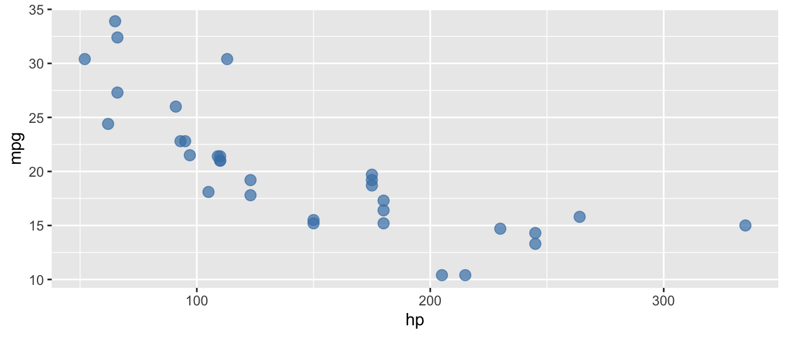
D.9.4 geom_line()
Add lines connecting points.
Arguments:
linewidth: Line thicknesscolor: Line colorlinetype: Line type (e.g., “dashed”)
Example:
# Line plot (useful for time series)
df <- data.frame(x = 1:10, y = cumsum(rnorm(10)))
ggplot(df, aes(x = x, y = y)) +
geom_line(color = "steelblue", linewidth = 1)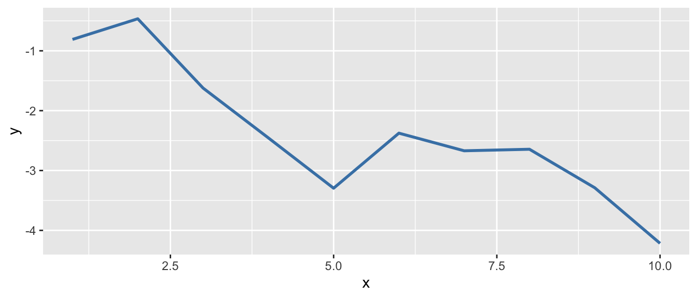
D.9.5 geom_histogram()
Create a histogram.
Arguments:
binwidth: Width of each binbins: Number of binsfill: Bar fill colorcolor: Bar outline color
Example:
ggplot(mtcars, aes(x = mpg)) +
geom_histogram(binwidth = 3, fill = "steelblue", color = "white")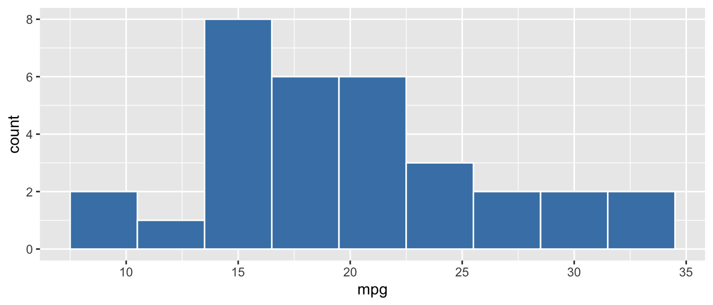
D.9.6 geom_boxplot()
Create a boxplot.
Arguments:
fill: Box fill coloroutlier.color: Color of outlier points
Example:
ggplot(mtcars, aes(x = factor(cyl), y = mpg)) +
geom_boxplot(fill = "lightblue")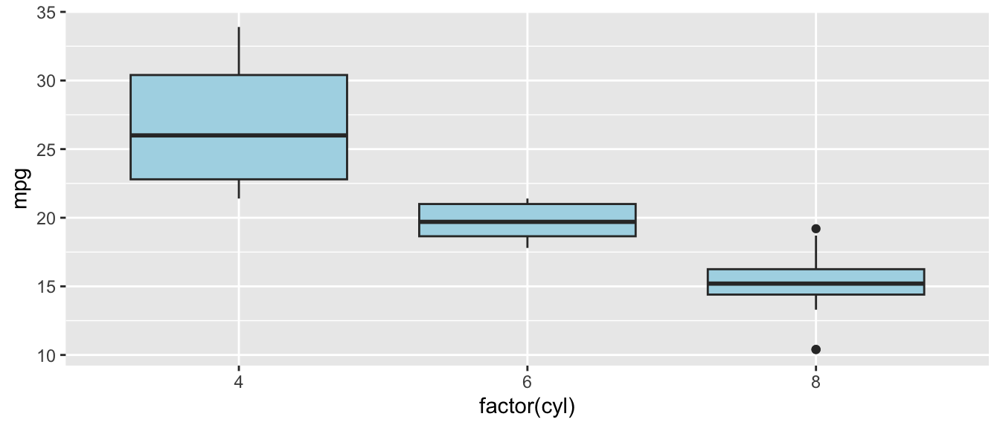
D.9.7 geom_bar() and geom_col()
Create bar charts. geom_bar() counts observations; geom_col() uses values directly.
Arguments:
fill: Bar fill colorstat: Forgeom_bar(), use"identity"to plot values directly
Example:
# geom_bar counts automatically
ggplot(mtcars, aes(x = factor(cyl))) +
geom_bar(fill = "steelblue")
D.9.8 geom_smooth()
Add a smoothed conditional mean (often a regression line).
Arguments:
method: Smoothing method (e.g.,"lm"for linear)se: Show confidence interval? (default:TRUE)color: Line color
Example:
ggplot(mtcars, aes(x = hp, y = mpg)) +
geom_point() +
geom_smooth(method = "lm", se = TRUE, color = "red")`geom_smooth()` using formula = 'y ~ x'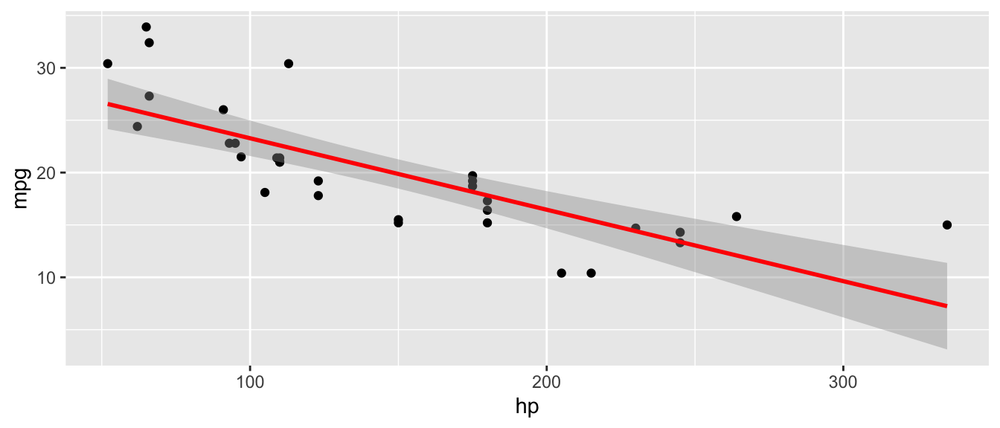
D.9.9 geom_hline() and geom_vline()
Add horizontal or vertical reference lines.
Arguments:
yintercept/xintercept: Where to draw the linelinetype: Line type (e.g.,"dashed")color: Line color
Example:
ggplot(mtcars, aes(x = hp, y = mpg)) +
geom_point() +
geom_hline(yintercept = mean(mtcars$mpg), linetype = "dashed", color = "red")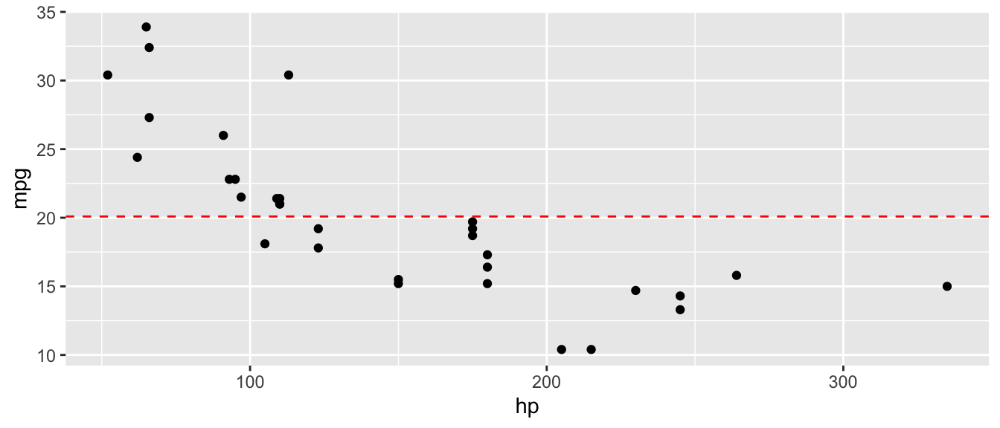
D.9.10 labs()
Add labels to the plot (title, axis labels, etc.).
Arguments:
title: Plot titlex,y: Axis labelscolor,fill: Legend titles
Example:
ggplot(mtcars, aes(x = hp, y = mpg)) +
geom_point() +
labs(
title = "Fuel Efficiency vs. Horsepower",
x = "Horsepower",
y = "Miles per Gallon"
)D.9.11 facet_wrap()
Create small multiples (separate panels for each level of a variable).
Arguments:
facets: A formula like~ variablenrow,ncol: Number of rows or columnsscales: Should scales be fixed or free?
Example:
ggplot(mtcars, aes(x = hp, y = mpg)) +
geom_point() +
facet_wrap(~ cyl, nrow = 1)D.9.12 theme_minimal()
Apply a clean, minimal theme to the plot.
Arguments: None (or see theme() for customization)
Example:
ggplot(mtcars, aes(x = hp, y = mpg)) +
geom_point() +
theme_minimal()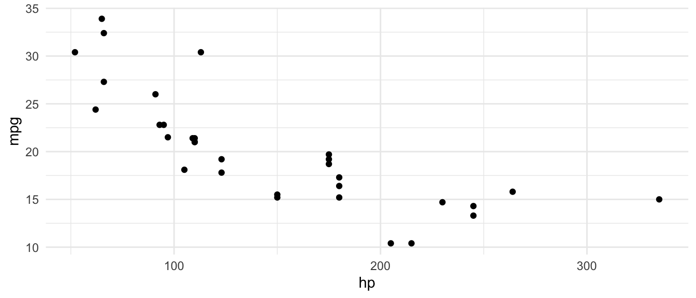
D.10 Utility Functions
D.10.1 c()
Combine values into a vector.
Arguments:
...: Values to combine
Example:
x <- c(1, 2, 3, 4, 5)
x[1] 1 2 3 4 5D.10.2 seq()
Generate a sequence of numbers.
Arguments:
from: Starting valueto: Ending valueby: Incrementlength.out: Desired length of sequence
Example:
seq(from = 0, to = 10, by = 2)[1] 0 2 4 6 8 10seq(from = 0, to = 1, length.out = 5)[1] 0.00 0.25 0.50 0.75 1.00D.10.3 rep()
Repeat values.
Arguments:
x: Value(s) to repeattimes: Number of times to repeat
Example:
rep(c("A", "B"), times = 3)[1] "A" "B" "A" "B" "A" "B"D.10.4 sample()
Take a random sample.
Arguments:
x: Vector to sample fromsize: Number of items to samplereplace: Sample with replacement?
Example:
set.seed(123)
sample(1:10, size = 5, replace = FALSE)[1] 3 10 2 8 6D.10.5 set.seed()
Set the random number seed for reproducibility.
Arguments:
seed: An integer
Example:
set.seed(42)
rnorm(3) # Will always produce the same values[1] 1.3709584 -0.5646982 0.3631284D.10.6 rnorm()
Generate random numbers from a normal distribution.
Arguments:
n: Number of values to generatemean: Mean of the distribution (default: 0)sd: Standard deviation (default: 1)
Example:
set.seed(123)
rnorm(5, mean = 100, sd = 15)[1] 91.59287 96.54734 123.38062 101.05763 101.93932D.10.7 factor()
Create a factor (categorical variable).
Arguments:
x: A vectorlevels: The allowed levels (in order)labels: Labels for the levels
Example:
education <- c("HS", "College", "HS", "Graduate")
factor(education, levels = c("HS", "College", "Graduate"))[1] HS College HS Graduate
Levels: HS College GraduateD.10.8 as.factor(), as.numeric(), as.character()
Convert objects to a different type.
Arguments:
x: Object to convert
Example:
x <- c("1", "2", "3")
as.numeric(x)[1] 1 2 3D.10.9 is.na()
Check for missing values.
Arguments:
x: A vector or data frame
Example:
x <- c(1, 2, NA, 4)
is.na(x)[1] FALSE FALSE TRUE FALSEsum(is.na(x)) # Count missing values[1] 1D.10.10 library()
Load an installed package.
Arguments:
package: Name of the package (unquoted)
Example:
library(tidyverse)D.10.11 install.packages()
Install a package from CRAN (run once, not in scripts).
Arguments:
pkgs: Package name (quoted)
Example:
install.packages("tidyverse")D.10.12 data.frame()
Create a data frame (base R version). See also tibble() for the tidyverse alternative.
Arguments:
...: Name-value pairs of columns
Example:
data.frame(
x = 1:3,
y = c("a", "b", "c")
) x y
1 1 a
2 2 b
3 3 cD.10.13 names()
Get or set the names of an object (column names for data frames, element names for vectors and lists).
Arguments:
x: An R object
Example:
x <- c(a = 1, b = 2, c = 3)
names(x)[1] "a" "b" "c"D.10.14 length()
Return the number of elements in a vector or list.
Arguments:
x: A vector or list
Example:
x <- c(10, 20, 30, 40)
length(x)[1] 4D.10.15 unique()
Return the unique values in a vector, removing duplicates.
Arguments:
x: A vector
Example:
x <- c(1, 2, 2, 3, 3, 3)
unique(x)[1] 1 2 3D.10.16 which()
Return the indices of elements that satisfy a condition.
Arguments:
x: A logical vector
Example:
x <- c(5, 12, 3, 18, 7)
which(x > 10)[1] 2 4D.10.17 table()
Build a frequency table (counts of each unique value).
Arguments:
...: One or more vectors
Example:
table(mtcars$cyl)
4 6 8
11 7 14 D.10.18 paste() and paste0()
Concatenate strings. paste() separates with a space by default; paste0() uses no separator.
Arguments:
...: Strings or vectors to concatenatesep: Separator between elements (default" "forpaste(),""forpaste0())collapse: Optional string to collapse a vector into a single string
Example:
paste("Year", 2020)[1] "Year 2020"paste0("x", 1:3)[1] "x1" "x2" "x3"paste(c("a", "b", "c"), collapse = ", ")[1] "a, b, c"D.10.19 sprintf()
Format strings with placeholders. Useful for inserting numbers into text with specific formatting.
Arguments:
fmt: A format string with%s(string),%d(integer),%f(decimal) placeholders...: Values to insert
Example:
sprintf("The coefficient is %.3f (p = %.4f)", -0.068, 0.0023)[1] "The coefficient is -0.068 (p = 0.0023)"D.10.20 format()
Format numbers for display with control over decimal places, significant digits, and separators.
Arguments:
x: A number or vectordigits: Number of significant digitsnsmall: Minimum number of digits after the decimalbig.mark: Thousands separator
Example:
format(123456.789, big.mark = ",", nsmall = 2)[1] "123,456.79"D.10.21 print() and cat()
Display output. print() prints R objects with their structure; cat() prints raw text without quotes or formatting.
Example:
print("Hello")[1] "Hello"cat("The answer is", 42, "\n")The answer is 42 D.10.22 log() and exp()
Natural logarithm and exponential functions. log() computes \(\ln(x)\); exp() computes \(e^x\).
Arguments:
x: A numeric vectorbase: Base of the logarithm (default: \(e\), usebase = 10for \(\log_{10}\))
Example:
log(100) # Natural log[1] 4.60517log(100, base = 10) # Log base 10[1] 2exp(1) # e^1 = 2.718...[1] 2.718282D.10.23 sqrt()
Compute the square root.
Arguments:
x: A numeric vector
Example:
sqrt(144)[1] 12D.10.24 abs()
Compute the absolute value.
Arguments:
x: A numeric vector
Example:
abs(c(-3, -1, 0, 2, 5))[1] 3 1 0 2 5D.10.25 round()
Round a number to a specified number of decimal places.
Arguments:
x: A numeric vectordigits: Number of decimal places (default: 0)
Example:
round(3.14159, digits = 2)[1] 3.14D.10.26 cumsum()
Compute the cumulative sum of a vector.
Arguments:
x: A numeric vector
Example:
cumsum(c(1, 2, 3, 4, 5))[1] 1 3 6 10 15D.11 The Pipe Operator: |>
The pipe operator takes the output from the left side and passes it as the first argument to the function on the right. This allows you to chain operations together in a readable way.
Example without pipe:
# Nested functions are hard to read
summary(select(filter(mtcars, mpg > 20), mpg, hp))Example with pipe:
# Piped version is much clearer
mtcars |>
filter(mpg > 20) |>
select(mpg, hp) |>
summary() mpg hp
Min. :21.00 Min. : 52.0
1st Qu.:21.43 1st Qu.: 66.0
Median :23.60 Median : 94.0
Mean :25.48 Mean : 88.5
3rd Qu.:29.62 3rd Qu.:109.8
Max. :33.90 Max. :113.0
Keyboard Shortcut
In RStudio, type Cmd/Ctrl + Shift + M to insert the pipe operator.
D.12 Statistical Distribution Functions
R has a consistent naming convention for distribution functions. Each distribution has four functions, prefixed by a letter:
d= density (the height of the PDF at a given value)p= probability (the CDF—cumulative probability up to a given value)q= quantile (the inverse of the CDF—find the value for a given probability)r= random (generate random draws from the distribution)
For example, for the normal distribution: dnorm(), pnorm(), qnorm(), rnorm().
D.12.1 dnorm() and dt()
Compute the probability density function (PDF) for the normal or t-distribution. Useful for plotting distribution curves.
Arguments:
x: Value(s) at which to evaluate the densitymean,sd: Parameters of the normal distribution (fordnorm())df: Degrees of freedom (fordt())
Example:
# Height of the standard normal PDF at x = 0
dnorm(0, mean = 0, sd = 1)[1] 0.3989423# Height of the t-distribution PDF at x = 2 with 30 df
dt(2, df = 30)[1] 0.05685228D.12.2 pt()
Compute the cumulative distribution function (CDF) for the t-distribution. This gives you the probability that a t-distributed random variable is less than or equal to a given value. Essential for computing p-values.
Arguments:
q: The t-value(s) to evaluatedf: Degrees of freedomlower.tail: IfTRUE(default), returns \(P(T \leq q)\); ifFALSE, returns \(P(T > q)\)
Example:
# P-value for a two-sided test with t = 2.3 and 100 df
2 * pt(abs(2.3), df = 100, lower.tail = FALSE)[1] 0.0235262D.12.3 qt()
Compute the quantile function (inverse CDF) for the t-distribution. Given a probability, it returns the corresponding t-value. Used to find critical values for hypothesis tests.
Arguments:
p: Probability (between 0 and 1)df: Degrees of freedomlower.tail: IfTRUE(default), finds the value where \(P(T \leq q) = p\); ifFALSE, finds the value where \(P(T > q) = p\)
Example:
# Critical value for a two-sided 5% test with 100 df
# We want the value that leaves 2.5% in the upper tail
qt(0.025, df = 100, lower.tail = FALSE)[1] 1.983972D.12.4 qf()
Compute the quantile function for the F-distribution. Used to find critical values for F-tests.
Arguments:
p: Probabilitydf1: Numerator degrees of freedom (number of restrictions)df2: Denominator degrees of freedom (from the unrestricted model)lower.tail: IfFALSE, returns the value where \(P(F > q) = p\)
Example:
# Critical value for an F-test with 2 and 494 degrees of freedom at 5%
qf(0.05, df1 = 2, df2 = 494, lower.tail = FALSE)[1] 3.013973D.12.5 runif()
Generate random draws from a uniform distribution.
Arguments:
n: Number of values to generatemin: Minimum value (default: 0)max: Maximum value (default: 1)
Example:
set.seed(123)
runif(5, min = 1, max = 10)[1] 3.588198 8.094746 4.680792 8.947157 9.464206D.12.6 rexp()
Generate random draws from an exponential distribution.
Arguments:
n: Number of values to generaterate: Rate parameter \(\lambda\) (default: 1). The mean of the distribution is \(1/\lambda\).
Example:
set.seed(123)
rexp(5, rate = 0.5) # Mean = 1/0.5 = 2[1] 1.68691452 1.15322054 2.65810974 0.06315472 0.11242195D.12.7 rbinom()
Generate random draws from a binomial distribution. Useful for simulating binary outcomes (e.g., treatment assignment).
Arguments:
n: Number of values to generatesize: Number of trialsprob: Probability of success on each trial
Example:
set.seed(123)
# Simulate 10 coin flips (1 = heads, 0 = tails)
rbinom(10, size = 1, prob = 0.5) [1] 0 1 0 1 1 0 1 1 1 0D.12.8 rt()
Generate random draws from a t-distribution.
Arguments:
n: Number of values to generatedf: Degrees of freedom
Example:
set.seed(123)
rt(5, df = 30)[1] -0.5878234 -1.4779045 -0.1125616 -1.4142351 1.6124113D.13 Model Diagnostic Functions
D.13.1 anova()
Compare nested models using an F-test. Pass the restricted (smaller) model first, then the unrestricted (larger) model. Tests whether the additional variables in the unrestricted model are jointly significant.
Arguments:
object: One or more fitted model objects
Example:
reg_small <- lm(mpg ~ hp, data = mtcars)
reg_large <- lm(mpg ~ hp + wt + cyl, data = mtcars)
anova(reg_small, reg_large)Analysis of Variance Table
Model 1: mpg ~ hp
Model 2: mpg ~ hp + wt + cyl
Res.Df RSS Df Sum of Sq F Pr(>F)
1 30 447.67
2 28 176.62 2 271.05 21.485 2.214e-06 ***
---
Signif. codes: 0 '***' 0.001 '**' 0.01 '*' 0.05 '.' 0.1 ' ' 1D.13.2 nobs()
Return the number of observations used to fit a model.
Arguments:
object: A fitted model object
Example:
reg <- lm(mpg ~ hp, data = mtcars)
nobs(reg)[1] 32D.13.3 df.residual()
Return the residual degrees of freedom (\(n - k - 1\)) from a fitted model.
Arguments:
object: A fitted model object
Example:
reg <- lm(mpg ~ hp + wt, data = mtcars)
df.residual(reg) # 32 - 2 - 1 = 29[1] 29D.13.4 resid()
Extract residuals from a fitted model. Equivalent to residuals().
Arguments:
object: A fitted model object
Example:
reg <- lm(mpg ~ hp, data = mtcars)
head(resid(reg)) Mazda RX4 Mazda RX4 Wag Datsun 710 Hornet 4 Drive
-1.5937500 -1.5937500 -0.9536307 -1.1937500
Hornet Sportabout Valiant
0.5410881 -4.8348913 D.14 Additional Data Manipulation Functions
D.14.1 tibble()
Create a data frame (modern version). Works like data.frame() but with better defaults: it doesn’t convert strings to factors and prints more cleanly.
Arguments:
...: Name-value pairs of columns
Example:
tibble(
name = c("Alice", "Bob", "Carol"),
age = c(25, 30, 35),
income = c(50000, 60000, 70000)
)# A tibble: 3 × 3
name age income
<chr> <dbl> <dbl>
1 Alice 25 50000
2 Bob 30 60000
3 Carol 35 70000D.14.2 bind_rows()
Stack data frames on top of each other (by rows).
Arguments:
...: Data frames to bind together
Example:
df1 <- tibble(x = 1:3, y = c("a", "b", "c"))
df2 <- tibble(x = 4:6, y = c("d", "e", "f"))
bind_rows(df1, df2)# A tibble: 6 × 2
x y
<int> <chr>
1 1 a
2 2 b
3 3 c
4 4 d
5 5 e
6 6 f D.14.3 slice_sample()
Randomly sample rows from a data frame.
Arguments:
.data: A data framen: Number of rows to samplereplace: Sample with replacement? (default:FALSE)
Example:
set.seed(123)
mtcars |>
slice_sample(n = 5) mpg cyl disp hp drat wt qsec vs am gear carb high_mpg
Maserati Bora 15.0 8 301.0 335 3.54 3.570 14.60 0 1 5 8 0
Cadillac Fleetwood 10.4 8 472.0 205 2.93 5.250 17.98 0 0 3 4 0
Honda Civic 30.4 4 75.7 52 4.93 1.615 18.52 1 1 4 2 1
Merc 450SLC 15.2 8 275.8 180 3.07 3.780 18.00 0 0 3 3 0
Datsun 710 22.8 4 108.0 93 3.85 2.320 18.61 1 1 4 1 1D.14.4 map_dfr() (purrr)
Apply a function to each element of a list or vector and combine the results into a single data frame by binding rows. Useful for running simulations.
Arguments:
.x: A list or vector to iterate over.f: A function to apply to each element
Example:
# Run 5 simulations and collect results
map_dfr(1:5, function(i) {
x <- rnorm(50)
tibble(sim = i, mean_x = mean(x))
})# A tibble: 5 × 2
sim mean_x
<int> <dbl>
1 1 -0.0600
2 2 0.0103
3 3 0.0978
4 4 -0.000785
5 5 -0.0664 D.15 Additional ggplot2 Functions
D.15.1 annotate()
Add text, labels, or shapes to a plot at specific coordinates. Unlike geom_text(), annotate() is for adding single annotations rather than mapping data to text.
Arguments:
geom: Type of annotation (e.g.,"text","rect","segment")x,y: Position of the annotationlabel: Text to display (for"text"geom)parse: IfTRUE, interpret the label as a plotmath expression (default:FALSE)color,size: Styling options
Example:
ggplot(mtcars, aes(x = hp, y = mpg)) +
geom_point() +
annotate("text", x = 300, y = 30,
label = "hat(beta)[1] == -0.068",
parse = TRUE, color = "red", size = 5)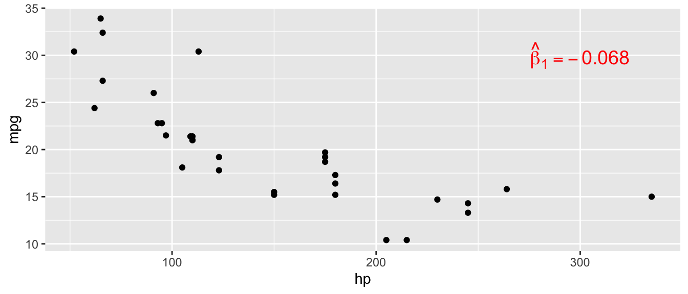
D.15.2 stat_function()
Overlay a mathematical function on a ggplot. Useful for plotting theoretical distributions on top of histograms.
Arguments:
fun: The function to plot (e.g.,dnorm,dt)args: A list of additional arguments to pass to the functioncolor,linewidth: Styling options
Example:
ggplot(data.frame(x = rnorm(500)), aes(x = x)) +
geom_histogram(aes(y = after_stat(density)),
bins = 30, fill = "lightblue", color = "black") +
stat_function(fun = dnorm, args = list(mean = 0, sd = 1),
color = "red", linewidth = 1.2)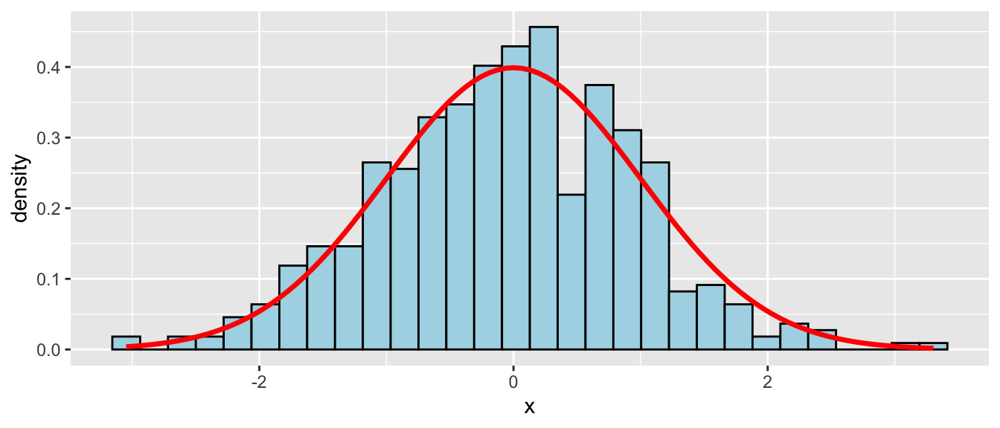
D.15.3 geom_segment()
Draw line segments between specified start and end points. Useful for adding arrows, error bars, or connecting points.
Arguments:
aes(x, y, xend, yend): Start and end coordinatesarrow: Add arrowheads witharrow()color,linewidth,linetype: Styling options
Example:
ggplot(mtcars, aes(x = hp, y = mpg)) +
geom_point() +
geom_segment(aes(x = 150, y = 25, xend = 150, yend = 15),
arrow = arrow(length = unit(0.2, "cm")),
color = "red", linewidth = 1)Warning in geom_segment(aes(x = 150, y = 25, xend = 150, yend = 15), arrow = arrow(length = unit(0.2, : All aesthetics have length 1, but the data has 32 rows.
ℹ Please consider using `annotate()` or provide this layer with data containing
a single row.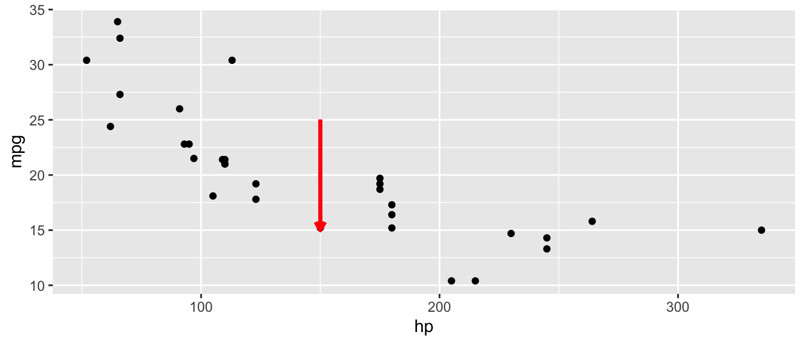
D.15.4 geom_ribbon() and geom_area()
Shade a region between a ymin and ymax. geom_area() is a special case where ymin = 0. Useful for shading regions under distribution curves (e.g., p-values, rejection regions).
Arguments:
aes(x, ymin, ymax): Boundaries of the shaded regionfill: Fill coloralpha: Transparency
Example:
shade_data <- tibble(
x = seq(-3, 3, length.out = 200),
y = dnorm(x)
)
ggplot(shade_data, aes(x = x)) +
geom_line(aes(y = y)) +
geom_ribbon(data = shade_data |> filter(x >= 1.96),
aes(ymin = 0, ymax = y),
fill = "red", alpha = 0.5)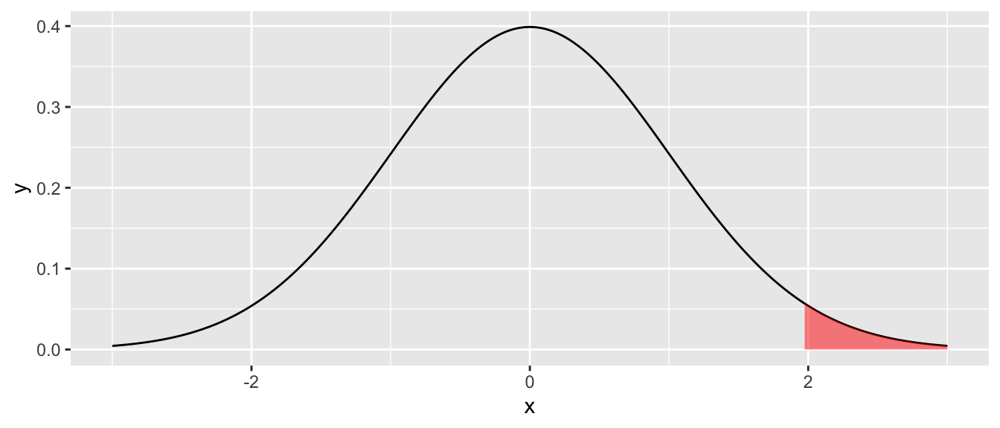
D.15.5 geom_errorbar()
Add error bars to a plot. Can be vertical (default) or horizontal (with orientation = "y"). Commonly used for confidence interval plots.
Arguments:
aes(ymin, ymax): Lower and upper bounds (vertical), oraes(xmin, xmax)withorientation = "y"(horizontal)width: Width of the error bar capsorientation: Set to"y"for horizontal error bars
Example:
ci_data <- tibble(
variable = c("hp", "wt", "cyl"),
estimate = c(-0.03, -3.8, -1.5),
lower = c(-0.05, -5.1, -2.8),
upper = c(-0.01, -2.5, -0.2)
)
ggplot(ci_data, aes(y = variable, x = estimate)) +
geom_point(size = 3) +
geom_errorbar(aes(xmin = lower, xmax = upper),
width = 0.2, orientation = "y") +
geom_vline(xintercept = 0, linetype = "dashed") +
theme_minimal()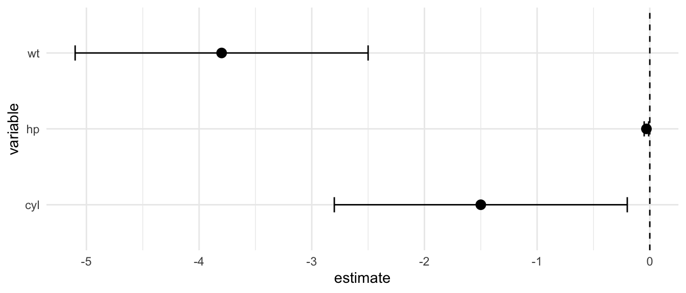
D.15.6 geom_density()
Plot a smoothed density estimate. An alternative to histograms for visualizing distributions.
Arguments:
fill: Fill coloralpha: Transparencycolor: Line color
Example:
ggplot(mtcars, aes(x = mpg)) +
geom_density(fill = "steelblue", alpha = 0.5)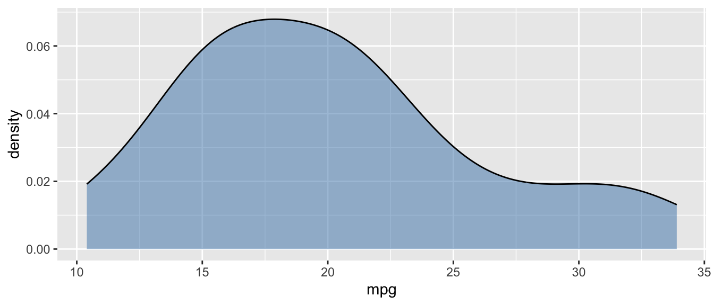
D.15.7 scale_color_manual() and scale_fill_manual()
Manually set colors for categorical variables mapped to color or fill.
Arguments:
values: A named vector of colorslabels: Optional labels for the legend
Example:
ggplot(mtcars, aes(x = hp, y = mpg, color = factor(cyl))) +
geom_point(size = 2) +
scale_color_manual(values = c("4" = "steelblue", "6" = "orange", "8" = "red"))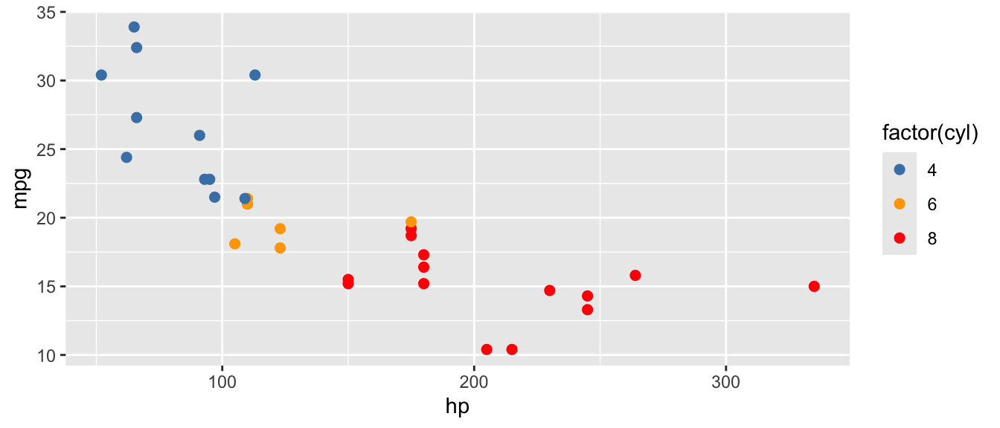
D.15.8 coord_cartesian()
Zoom into a region of the plot without dropping data points (unlike xlim()/ylim(), which remove data outside the range).
Arguments:
xlim: Range for x-axis asc(min, max)ylim: Range for y-axis asc(min, max)
Example:
ggplot(mtcars, aes(x = hp, y = mpg)) +
geom_point() +
coord_cartesian(xlim = c(50, 200), ylim = c(15, 35))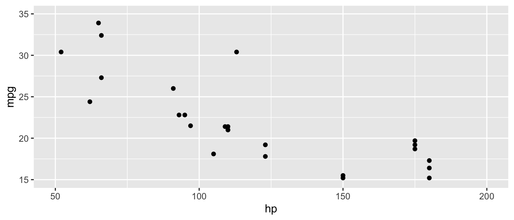
D.15.9 coord_flip()
Flip the x and y axes. Useful for making horizontal bar charts or coefficient plots.
Example:
ggplot(mtcars, aes(x = factor(cyl), y = mpg)) +
geom_boxplot(fill = "lightblue") +
coord_flip()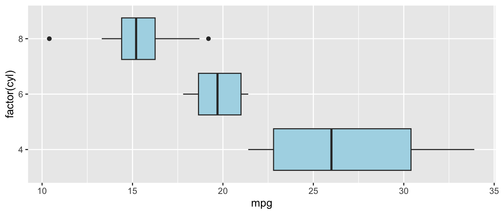
D.15.10 theme()
Customize individual elements of a plot’s appearance (axis text, legend position, grid lines, etc.). Use inside + like any other ggplot layer.
Arguments:
axis.text: Control axis tick label appearance withelement_text()axis.title: Control axis title appearancelegend.position: Position of legend ("top","bottom","left","right","none")panel.grid.minor: Control minor grid lines withelement_blank()to remove
Example:
ggplot(mtcars, aes(x = hp, y = mpg)) +
geom_point() +
theme(
axis.text = element_text(size = 12),
legend.position = "none",
panel.grid.minor = element_blank()
)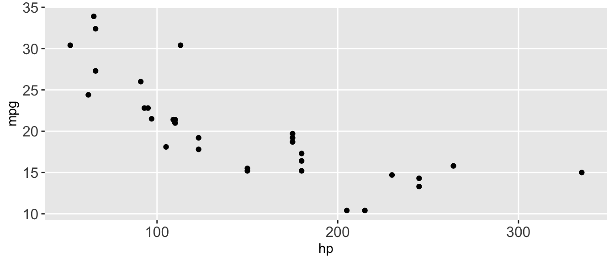
D.15.11 element_text() and element_blank()
Helper functions used inside theme(). element_text() styles text elements; element_blank() removes elements entirely.
Arguments (element_text()):
size: Font sizeface: Font face ("bold","italic")angle: Rotation anglehjust,vjust: Horizontal and vertical justification
Example:
ggplot(mtcars, aes(x = hp, y = mpg)) +
geom_point() +
labs(title = "MPG vs Horsepower") +
theme(
plot.title = element_text(size = 16, face = "bold"),
panel.grid.minor = element_blank()
)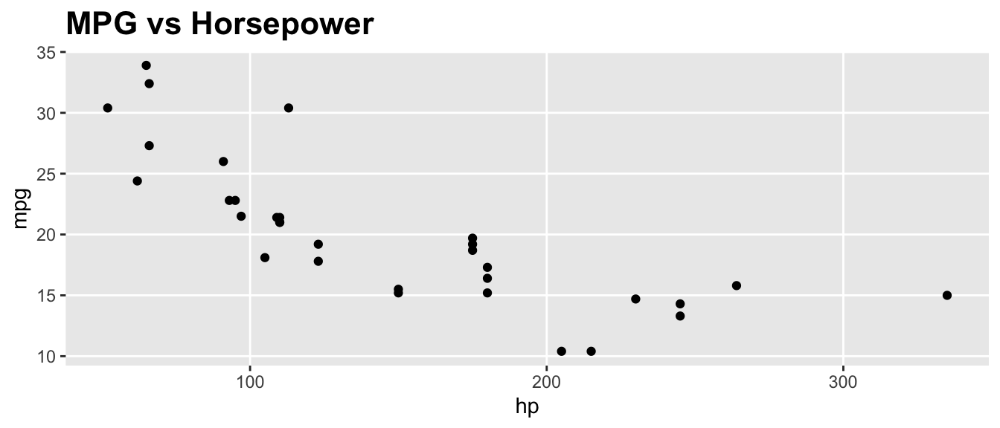
D.15.12 geom_text() and geom_label()
Add text labels to data points. geom_label() draws a rectangle behind the text for readability.
Arguments:
aes(label): The text to displaynudge_x,nudge_y: Offset the label from the pointsize: Text sizehjust,vjust: Horizontal and vertical justification
Example:
top_cars <- mtcars |>
mutate(car = rownames(mtcars)) |>
slice(1:5)
ggplot(top_cars, aes(x = hp, y = mpg, label = car)) +
geom_point() +
geom_text(nudge_y = 1, size = 3)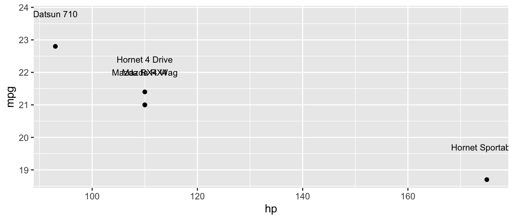
D.15.13 geom_rug()
Add small tick marks along the axes showing the marginal distribution of the data. Useful for showing where observations are concentrated.
Arguments:
sides: Which sides to draw rugs on ("b"= bottom,"l"= left,"bl"= both)alpha: Transparency
Example:
ggplot(mtcars, aes(x = hp, y = mpg)) +
geom_point() +
geom_rug(alpha = 0.5)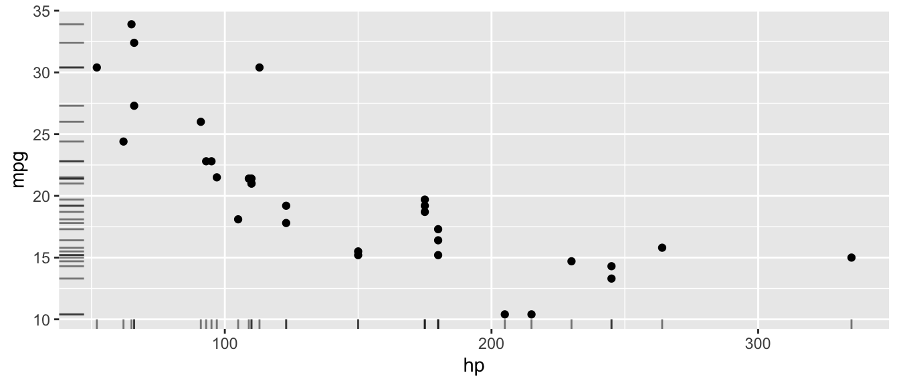
D.15.14 scale_x_continuous() and scale_y_continuous()
Customize the x or y axis for continuous variables: set limits, breaks, and labels.
Arguments:
breaks: Where to place tick markslabels: Labels for the tick markslimits: Range of the axisexpand: Expansion around the data range
Example:
ggplot(mtcars, aes(x = hp, y = mpg)) +
geom_point() +
scale_x_continuous(breaks = seq(50, 350, by = 50)) +
scale_y_continuous(limits = c(10, 35))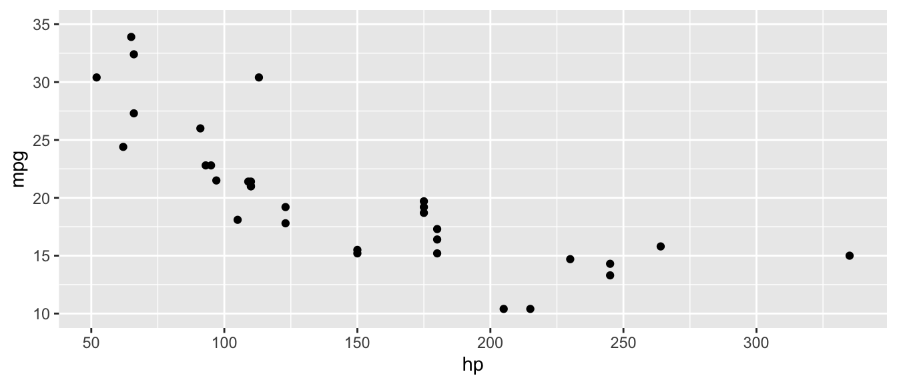
D.15.15 guides() and guide_legend()
Customize or remove legends. guides() controls which aesthetics get legends; guide_legend() customizes legend appearance.
Arguments (guides()):
- Aesthetic names (e.g.,
color,fill,size) set to"none"to remove orguide_legend()to customize
Example:
ggplot(mtcars, aes(x = hp, y = mpg, color = factor(cyl))) +
geom_point(size = 3) +
guides(color = guide_legend(title = "Cylinders"))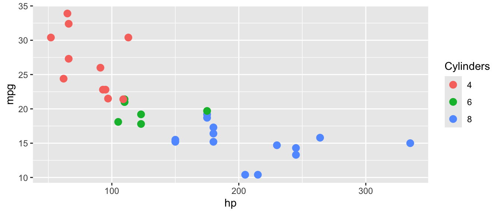
D.16 Quick Reference Tables
D.16.1 Data Import/Export Functions
| Function | Purpose | Package |
|---|---|---|
read_csv() |
Read CSV files | readr (tidyverse) |
read_excel() |
Read Excel files | readxl |
read_dta() |
Read Stata files | haven |
read_rds() |
Read R data files | readr (tidyverse) |
write_csv() |
Write CSV files | readr (tidyverse) |
write_rds() |
Write R data files | readr (tidyverse) |
write_dta() |
Write Stata files | haven |
D.16.2 Descriptive Statistics Functions
| Function | Purpose | Key Argument |
|---|---|---|
mean() |
Average | na.rm = TRUE |
sd() |
Standard deviation | na.rm = TRUE |
median() |
Middle value | na.rm = TRUE |
min(), max() |
Extremes | na.rm = TRUE |
sum() |
Total | na.rm = TRUE |
var() |
Variance | na.rm = TRUE |
cor() |
Correlation | use = "complete.obs" |
summary() |
Multiple stats | — |
datasummary_skim() |
Quick summary table | modelsummary |
D.16.3 Data Manipulation Functions (dplyr)
| Function | Purpose | Example |
|---|---|---|
select() |
Choose columns | select(data, col1, col2) |
filter() |
Choose rows | filter(data, x > 5) |
mutate() |
Create/modify variables | mutate(data, new = x * 2) |
group_by() |
Group data | group_by(data, category) |
summarize() |
Aggregate | summarize(data, avg = mean(x)) |
count() |
Count rows | count(data, category) |
arrange() |
Sort rows | arrange(data, desc(x)) |
rename() |
Rename columns | rename(data, new = old) |
slice() |
Select rows by position | slice(data, 1:10) |
across() |
Apply function to multiple columns | across(where(is.numeric), mean) |
ungroup() |
Remove grouping | ungroup(data) |
D.16.4 Join Functions (dplyr)
| Function | Keeps |
|---|---|
left_join(x, y) |
All rows from x, matching rows from y |
right_join(x, y) |
All rows from y, matching rows from x |
inner_join(x, y) |
Only rows with matches in both |
full_join(x, y) |
All rows from both |
D.16.5 Reshaping Functions (tidyr)
| Function | Purpose | Key Arguments |
|---|---|---|
pivot_longer() |
Wide to long | cols, names_to, values_to |
pivot_wider() |
Long to wide | names_from, values_from |
D.16.6 Regression and Diagnostic Functions
| Function | Purpose | Package |
|---|---|---|
lm() |
OLS regression | base R |
glm() |
Generalized linear models | base R |
summary() |
Model results | base R |
coef() |
Coefficients | base R |
confint() |
Confidence intervals | base R |
predict() |
Fitted values | base R |
residuals() / resid() |
Residuals | base R |
anova() |
F-test (compare models) | base R |
nobs() |
Number of observations | base R |
df.residual() |
Residual degrees of freedom | base R |
feols() |
Fixed effects + robust SE | fixest |
feglm() |
GLM with fixed effects | fixest |
fixef() |
Extract fixed effects | fixest |
bptest() |
Breusch-Pagan test | lmtest |
coeftest() |
Test with robust SEs | lmtest |
vcovHC() |
Robust covariance matrix | sandwich |
modelsummary() |
Formatted tables | modelsummary |
D.16.7 Statistical Distribution Functions
| Function | Purpose | Example |
|---|---|---|
dnorm(), dt() |
Density (PDF height) | dnorm(0), dt(2, df=30) |
pt() |
CDF for t-distribution | pt(2.3, df=100) |
qt() |
Critical values (t-dist) | qt(0.025, df=100) |
qf() |
Critical values (F-dist) | qf(0.05, df1=2, df2=494) |
rnorm() |
Random normal draws | rnorm(100, mean=0, sd=1) |
runif() |
Random uniform draws | runif(100, min=0, max=1) |
rbinom() |
Random binomial draws | rbinom(100, size=1, prob=0.5) |
rexp() |
Random exponential draws | rexp(100, rate=0.5) |
rt() |
Random t-dist draws | rt(100, df=30) |
D.16.8 ggplot2 Geometries and Customization
| Function | Plot Type / Purpose |
|---|---|
geom_point() |
Scatterplot |
geom_line() |
Line plot |
geom_histogram() |
Histogram |
geom_density() |
Smoothed density |
geom_boxplot() |
Boxplot |
geom_bar() |
Bar chart (counts) |
geom_col() |
Bar chart (values) |
geom_smooth() |
Smoothed line/regression |
geom_segment() |
Line segments/arrows |
geom_ribbon() / geom_area() |
Shaded regions |
geom_errorbar() |
Error bars / CIs |
geom_hline() / geom_vline() |
Reference lines |
geom_text() / geom_label() |
Data labels |
geom_rug() |
Marginal tick marks |
annotate() |
Text/shape annotations |
stat_function() |
Overlay math functions |
theme() |
Customize plot appearance |
scale_x_continuous() / scale_y_continuous() |
Customize axes |
scale_color_manual() / scale_fill_manual() |
Custom colors |
coord_cartesian() |
Zoom without dropping data |
coord_flip() |
Flip axes |
guides() / guide_legend() |
Customize legends |
D.16.9 Utility Functions
| Function | Purpose |
|---|---|
c() |
Combine values into a vector |
data.frame() / tibble() |
Create data frames |
paste() / paste0() |
Concatenate strings |
sprintf() / format() |
Format strings and numbers |
log() / exp() |
Natural log and exponential |
sqrt() / abs() |
Square root and absolute value |
round() |
Round to decimal places |
cumsum() |
Cumulative sum |
length() / unique() |
Vector length / unique values |
which() / table() |
Find indices / frequency table |
names() |
Get/set names |
is.na() |
Check for missing values |
factor() |
Create categorical variable |